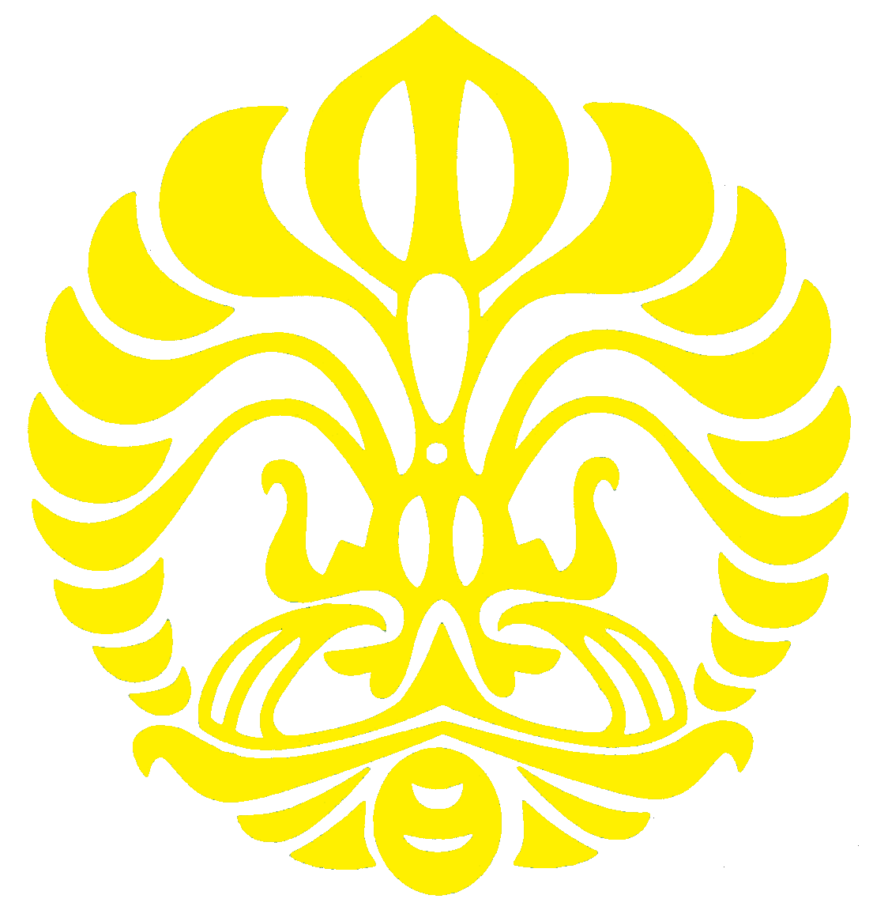
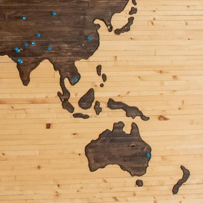

Education
Jan 2025 - Present
Louisiana, USA
Master of Science
Majoring in Financial Engineering
WorldQuant University

Jul 2016 - Jul 2022
West Java, Indonesia
Bachelor of Science
Majored in Mathematics. Specialized in Computational Mathematics
University of Indonesia
GPA: 3.42/4.00, High Merit

1
3.43
2
3.5
3
3.45
4
3.41
4.5
3.4
5
3.42
6
3.39
7
3.42
8
3.42
Credits Earned: 19/144
| Code | Course | Credit | Grade |
|---|---|---|---|
Credits Earned: 36/144
| Code | Course | Credit | Grade |
|---|---|---|---|
Credits Earned: 57/144
| Code | Course | Credit | Grade |
|---|---|---|---|
Credits Earned: 79/144
| Code | Course | Credit | Grade |
|---|---|---|---|
Credits Earned: 83/144
| Code | Course | Credit | Grade |
|---|---|---|---|
Credits Earned: 105/144
| Code | Course | Credit | Grade |
|---|---|---|---|
Credits Earned: 125/144
| Code | Course | Credit | Grade |
|---|---|---|---|
Credits Earned: 131/144
| Code | Course | Credit | Grade |
|---|---|---|---|
Credits Earned: 155/144
| Code | Course | Credit | Grade |
|---|---|---|---|
Jul 2013 - Jun 2016
Jakarta, Indonesia
High School Diploma
Majored in Mathematics and Natural Sciences
SMA Negeri 11 Jakarta
Grade: 46.30/60.00, Top 3 Graduate
Jul 2010 - Jun 2013
Jakarta, Indonesia
Middle School Diploma
Majored in Bilingual Education
SMP Negeri 236 Jakarta
Grade: 36.65/40.00, Top 10 Graduate
Mar 2022 - Mar 2023
Louisiana, USA
Applied Data Science
Remote module featuring 8 end-to-end applied Data Science projects
WorldQuant University
Jan 2022 - Jul 2022
West Java, Indonesia
Machine Learning
Remote external program, 20 credits earned without GPA accounted for bachelor studies
Bangkit Academy
GPA: 4.00/4.00, Graduated with Distinction (Top 10%)
Credits Earned: 20
| Code | Course | Credit | Grade |
|---|---|---|---|
| B22MLDC07 | Python Programming Fundamentals | 3 | A |
| B22MLCR01 | IT Automation with Python | A | |
| B22MLCR03 | TensorFlow Developer Professional Certificate | 2 | A |
| B22MLCR04 | Structuring Machine Learning Projects | A | |
| B22MLCR05 | TensorFlow Data and Deployment | 2 | A |
| B22TDCP01 | Preparing for TensorFlow Developer Certification | A | |
Jun 2019 - Jul 2019
West Java, Indonesia
Machine Learning
Onsite summer school held at Faculty of Computer Science, University of Indonesia
Southeast Asia Machine Learning School

Oct 2022 - Jan 2023
West Java, Indonesia
Back End Development
Remote scholarship program held in collaboration with AWS to build back-end apps
Dicoding Indonesia
Sep 2022 - Oct 2022
Jakarta, Indonesia
AWS Machine Learning Foundations
Remote scholarship program funded by Digital Talent Scholarship
AWS Academy
2010 - 2016
Jakarta, Indonesia
Mathematics, Natural Sciences, Social Sciences and Language
Onsite tutoring covering most school subjects
Primagama Tutoring Agency
2nd in Primagama competition for 10th graders majoring Mathematics and Natural Sciences
2006 - 2009
Jakarta, Indonesia
Mathematics
Onsite at-own-pace tutoring, adjusted learning based on tutee
Kumon Indonesia
Top Indonesia Mathematics Student of 2007 and 2008. Reached 10th grade Math as a 5th grader
2004 - 2006
West Java, Indonesia
Chess
Onsite chess school recognized by FIDE co-founded by Grand Master Utut Adianto
Sekolah Catur Utut Adianto
16th in Under Age 8 group of the 7th ASEAN Age Group Chess Championship